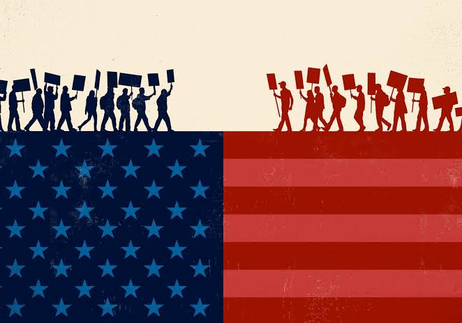

With the good always comes the bad. Some of the downsides of the Electoral College include the possibility of winning the popular vote but losing the election. This has happened five times in American history. In the year 2000, Al Gore won the popular vote and George W. Bush won the electoral votes needed to win the presidency. Opponents argue that the Electoral College was meant to protect smaller and rural states from being overpowered by urban areas with large populations. In recent years it has been noticed that presidential candidates are focused on “swing states,” those states that are almost divided right down the middle and can go either way. This leaves voters in other states feeling left out. Another con of the Electoral College is that it discourages voter turnout. If there is a state that usually is heavily Democrat or Republican, some people may feel that their vote does not count, and they may not vote. We could become more educated as a nation on how this process works so that we don’t remain so evenly divided on it. There are many opponents of our process of electing a President and some agree that our founding fathers could not figure out any other way to make it work.
